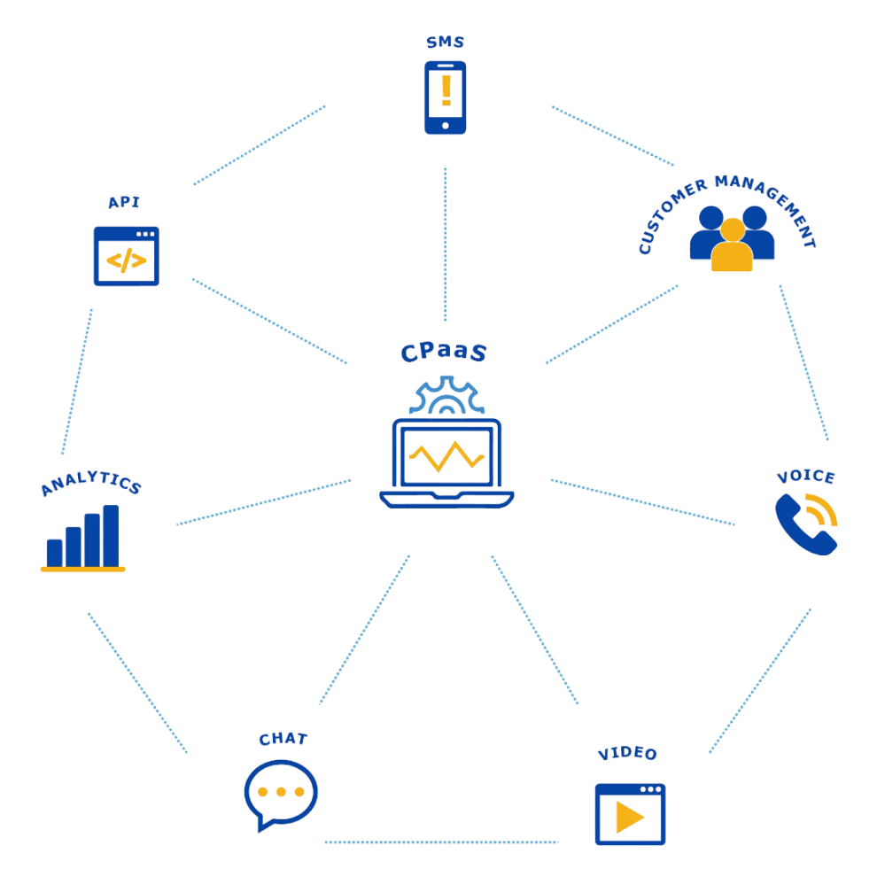
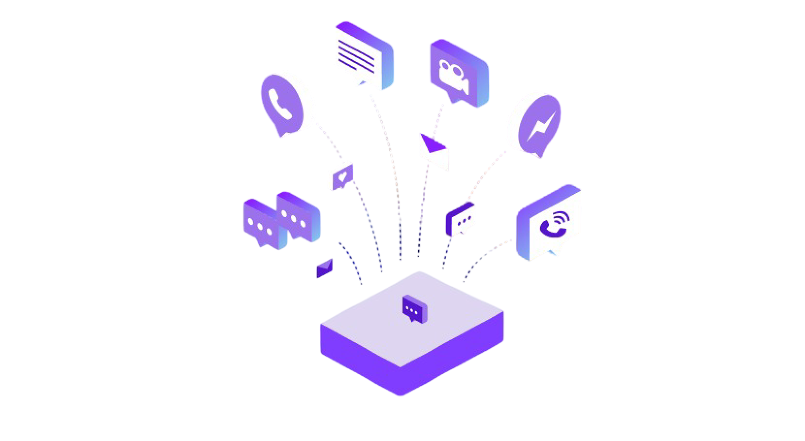
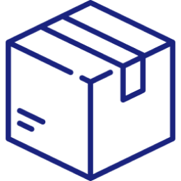

Communications Platform as a Service
Plataforma de Comunicação como Serviço

É uma solução de software de comunicação que atua como uma base sobre a qual desenvolvedores podem integrar uma variedade de aplicativos.
Métodos de comunicação típicos, como voz, chamadas de vídeo ou mensagens de texto SMS,
podem ser incorporados em outros sistemas por meio de APIs que se conectam à plataforma CPaaS. Essas APIs permitem que as
empresas expandam suas ofertas sem a necessidade de hardware ou software adicional.
CPaaS e a Transformação Digital

Expectativa de crescimento de $ 8,2 bilhões em 2021.
85% dos profissionais se conectam de maneiras diferentes com colegas e clientes do que faziam há apenas 5 anos.
As receitas de CPaaS estão crescendo mais de 40% ao ano.
CPaaS já ultrapassou o mercado de UCaaS (Unified Communication as a Service).
Marcas que estão em múltiplos canais melhoram a experiência do usuário e aumentam seus resultados.
Usos

Logística
Acesso seguro com 2FA.
Uso de números mascarados para proteção de funcionário e cliente.
Mantenha o cliente informado sobre entrega e serviços.
Verified calling para confirmação de entregas.
Varejo
Compra segura com 2FA.
Avisos sobre compras e entregas.
Upsell com novas ofertas e vantagens via SMS ou Verified Calling.
Call Center
Melhore taxas de abertura utilizando alertas SMS para confirmações.
Economia de números com o uso de um único número máscara por todos os agentes.
Verified Calling para confirmação de agendamentos.
Saude
Acesso seguro com 2FA.
Melhore o agendamento e reduza faltas com lembretes por SMS.
Tokens de autorização para procedimentos com 2FA.
Verified Calling para avisos de resultados e agendamentos.